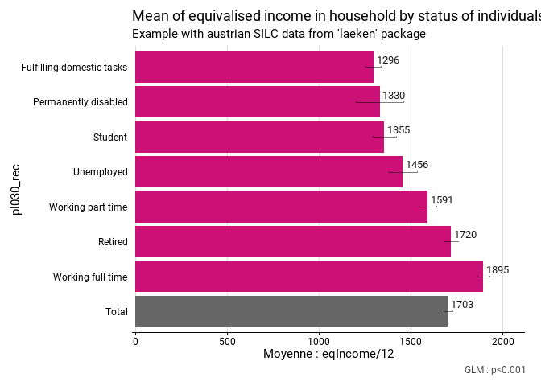
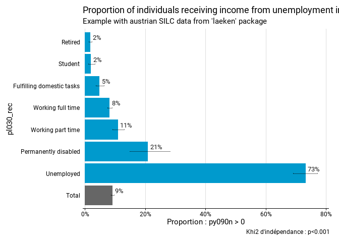

fonctionr est un package R qui a pour but de produire facilement des statistiques descriptives complètes à partir de données individuelles issues de sondages avec un design complexe. Le package inclut des fonctions permettant de produire les résultats les plus usuels (comparaison de proportions, de moyennes, de médianes, de distributions), en tenant compte du plan d’échantillonnage réel grâce au package survey.
fonctionr a l’objectif de faciliter l’inférence statistique : outre des résultats descriptifs, le package produit des intervalles de confiance et des tests statistiques qui prennent en compte de design réel de l’enquête. fonctionr produit également des graphiques des résultats à l’aide de ggplot2, dans le but de pouvoir intégrer directement et rapidement les résultats produits dans un rapport/une publication. Vous trouverez sur cette page une rapide introduction à fonctionr ; pour plus de détails, voir le manuel.
Documentation : Pour comprendre plus en profondeur notre package et ses différentes possibilités, nous renvoyons l’utilisateur au Manuel d’utilisation qui constitue un guide décrivant dans le détail les différentes fonctions de fonctionr.
Note de développement : Cette version de fonctionr est encore une version de développement. Elle est néanmoins pleinement fonctionnelle et a passé l’épreuve de nombreux tests, au cours desquels des solutions ont été apportées aux problèmes posés par des structures de données diverses. La mise à disposition publique du package nous permettra de bénéficier de retours plus larges concernant des problèmes que nous n’aurions pas anticipés. Néanmoins, dans un but de continuité d’utilisation, la logique d’utilisation de fonctionr restera globalement la même. Seuls quelques éléments seront encore possiblement modifiés ou harmonisés dans un avenir proche (nom d’arguments, arguments supplémentaires…), sans que cela impacte l’utilisation du programme.
Installation
Vous pouvez installer le package fonctionr depuis GitHub. Pour cela, il vous faut d’abord installer et charger le package devtools :
# Installer devtools si celui-ci n'est pas installé et charger le package
install.packages("devtools")
library(devtools)
# Installer fonctionr
devtools::install_github("jgires/fonctionr")Utilisation
Avant toute utilisation, il faut bien entendu charger le package :
L’utilisation de fonctionr a pour but d’être simple. Pour nos exemples, nous utilisons les données de l’enquête SILC pour l’Autriche contenues dans le package laeken. Nous recodons d’abord la variable de statut économique pour la lisibilité des résultats :
# Loading of data
data(eusilc, package = "laeken")
# Creation of categories of economic status
eusilc$pl030_rec <- NA
eusilc$pl030_rec[eusilc$pl030 == "1"] <- "Working full time"
eusilc$pl030_rec[eusilc$pl030 == "2"] <- "Working part time"
eusilc$pl030_rec[eusilc$pl030 == "3"] <- "Unemployed"
eusilc$pl030_rec[eusilc$pl030 == "4"] <- "Student"
eusilc$pl030_rec[eusilc$pl030 == "5"] <- "Retired"
eusilc$pl030_rec[eusilc$pl030 == "6"] <- "Permanently disabled"
eusilc$pl030_rec[eusilc$pl030 == "7"] <- "Fulfilling domestic tasks"fonctionr comprend plusieurs fonctions pour réaliser facilement des opérations descriptives courantes. mean_group() permet par exemple de calculer des moyennes de revenu par groupe. Les groupes, ici de statut économique, sont indiqués dans l’argument group. C’est la moyenne du revenu mensuel qui est calculée, car on peut indiquer soit une variable quantitative, soit une expression pour calculer celle-ci, directement dans l’argument quanti_exp (dans ce cas la variable eqIncome est divisée par 12 à la volée). Le design de l’enquête SILC est pris en considération, puisque l’on peut indiquer les clusters (ids), les strates (strata) et les poids (weight) dans la fonction. Les intervalles de confiance et un test de différence des moyennes sont calculés en conséquence.
eusilc_mean <- mean_group(
eusilc,
group = pl030_rec,
quanti_exp = eqIncome / 12,
strata = db040,
ids = db030,
weight = rb050,
reorder = T,
title = "Mean of equivalised income in household by status of individuals",
subtitle = "Example with austrian SILC data from 'laeken' package",
)La fonction produit une liste encapsulant plusieurs résultats dans des objets différents. L’objet tab comprend un data.frame avec les résultats au format tidy :
eusilc_mean$tab
#> # A tibble: 8 × 8
#> pl030_rec mean mean_low mean_upp n_sample n_weighted n_weighted_low
#> <fct> <dbl> <dbl> <dbl> <int> <dbl> <dbl>
#> 1 Fulfilling domesti… 1296. 1253. 1338. 1207 640311. 605978.
#> 2 Permanently disabl… 1330. 1202. 1458. 178 104930. 85796.
#> 3 Retired 1720. 1681. 1758. 3146 1806954. 1746273.
#> 4 Student 1355. 1291. 1419. 736 395829. 365532.
#> 5 Unemployed 1456. 1380. 1532. 518 303252. 276953.
#> 6 Working full time 1895. 1864. 1926. 5162 2869868. 2797833.
#> 7 Working part time 1591. 1542. 1639. 1160 636121. 600709.
#> 8 Total 1703. 1679. 1726. 12107 6757264. 6683738.
#> # ℹ 1 more variable: n_weighted_upp <dbl>L’objet test.stat comprend les résultats d’un test d’hypothèse prenant en compte le design de l’enquête. Le test pratiqué est dépendant de la statistique calculée. Dans le cas de mean_group(), il s’agit d’une ANOVA avec comme hypothèse nulle l’égalité entre les moyennes de tous les groupes :
eusilc_mean$test.stat
#> Wald test for pl030_rec
#> in svyglm(formula = fmla, design = data_W)
#> F = 141.5453 on 6 and 5985 df: p= < 2.22e-16L’objet graph comprend un graphique ggplot présentant les résultats et prêt à être inséré dans une publication :
eusilc_mean$graph
#> Warning: Removed 7 rows containing missing values or values outside the scale range
#> (`geom_text()`).
#> Warning: Removed 1 row containing missing values or values outside the scale range
#> (`geom_text()`).
fonctionr comprend plusieurs autres fonctions pour réaliser des opérations similaires, par exemple pour calculer des proportions par groupe avec la fonction prop_group(). On peut à nouveau indiquer directement une expression à partir de laquelle calculer les proportions dans l’argument prop_exp : dans ce cas la proportion à recevoir des revenus du chômage (py090n supérieurs à 0).
eusilc_prop <- prop_group(
eusilc,
group = pl030_rec,
prop_exp = py090n > 0,
strata = db040,
ids = db030,
weight = rb050,
reorder = T,
title = "Proportion of individuals receiving income from unemployment in their household",
subtitle = "Example with austrian SILC data from 'laeken' package"
)Le résultat contient à nouveau un tableau, le résultat d’un test d’hypothèse et un graphique ggplot. Dans le cas de prop_test(), le test d’hypothèse est un khi2 avec comme hypothèse nulle l’égalité de toutes les proportions.
eusilc_prop$tab
#> # A tibble: 8 × 11
#> pl030_rec prop prop_low prop_upp n_sample n_true_weighted
#> <fct> <dbl> <dbl> <dbl> <int> <dbl>
#> 1 Fulfilling domestic tasks 0.0485 0.0369 0.0624 1207 31048.
#> 2 Permanently disabled 0.209 0.148 0.282 178 21975.
#> 3 Retired 0.0177 0.0134 0.0229 3146 31988.
#> 4 Student 0.0194 0.0106 0.0323 736 7666.
#> 5 Unemployed 0.732 0.690 0.770 518 221878.
#> 6 Working full time 0.0818 0.0741 0.0899 5162 234629.
#> 7 Working part time 0.110 0.0921 0.130 1160 69869.
#> 8 Total 0.0916 0.0863 0.0971 12107 619054.
#> # ℹ 5 more variables: n_true_weighted_low <dbl>, n_true_weighted_upp <dbl>,
#> # n_tot_weighted <dbl>, n_tot_weighted_low <dbl>, n_tot_weighted_upp <dbl>
eusilc_prop$test.stat
#>
#> Pearson's X^2: Rao & Scott adjustment
#>
#> data: NextMethod()
#> F = 475.2, ndf = 5.9608, ddf = 35711.0201, p-value < 2.2e-16
eusilc_prop$graph
#> Warning: Removed 7 rows containing missing values or values outside the scale range
#> (`geom_text()`).
#> Warning: Removed 1 row containing missing values or values outside the scale range
#> (`geom_text()`).
Auteurs
Joël Girès est sociologue et travaille à l’Observatoire de la Santé et du Social de la Région de Bruxelles-Capitale.
François Ghesquière est sociologue et travaille à l’Institut wallon de l’évaluation, de la prospective et de la statistique.
Nous sommes ouverts à toute remarque afin d’améliorer notre package.